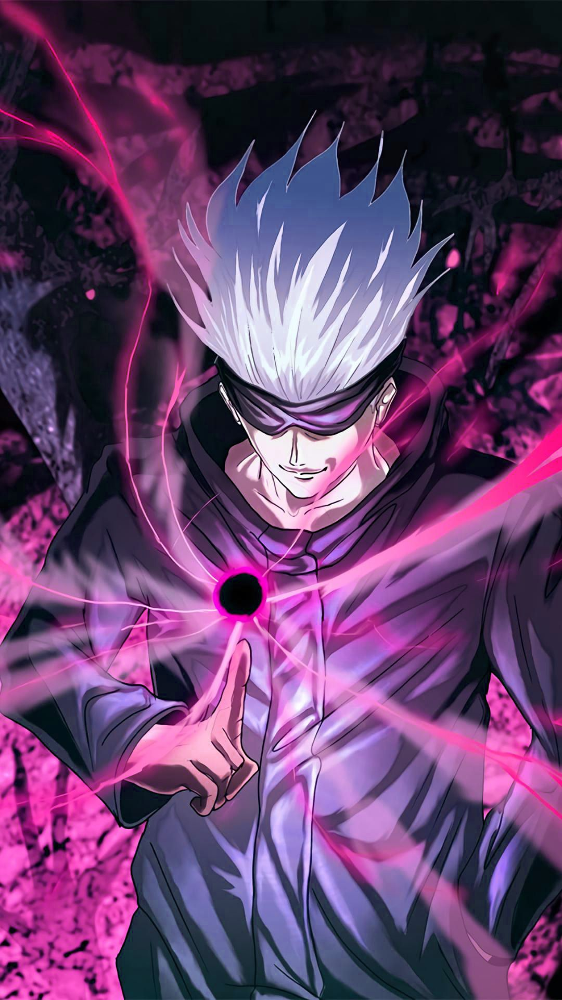

Satoru Gojo vs. Sukuna, também conhecida como A Batalha dos Mais Fortes, é a luta entre o feiticeiro mais forte
da era moderna, Satoru Gojo, e o feiticeiro mais forte da história, Ryomen Sukuna. Toma lugar em 24 de dezembro
de 2018, no Makyo Shinjuku abandonado, para decidir o futuro do mundo jujutsu.

Os aliados de Satoru Gojo o libertam do Reino da Prisão usando a Escada de Jacó de Hana Kurusu.
imediatamente confronta Kenjaku, pretendendo colocar o corpo de seu melhor amigo, Suguru Geto, para descansar.
Kenjaku revela que Reino da Prisão foi selado dentro da Fossa do Japão se caso Gojo escapasse. Porém, Gojo está
completamente intacto.
Kenjaku tenta falar sobre o tempo de Gojo dentro do objeto amaldiçoado, mas Gojo avisa
para Kenjaku escolher suas últimas palavras com cuidado. Ele ativa Lapso de Técnica Amaldiçoada: Azul com alta
produção, criando uma esfera com um campo de atração que puxa tudo por perto, incluindo Kenjaku.
Satoru Gojo é um personagem fictício da série de anime e mangá Jujutsu Kaisen criado por Gege Akutami. Ele fez
sua primeira aparição na animação prequela Jujutsu Kaisen 0 como o mestre de Yuta Okkotsu, um adolescente
amaldiçoado